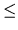

Let G = (V, E) be a connected graph without loops and multiple edges, where V and E are the vertex and edge, respectively, sets of G. For any two vertices u, v V , the distance between vertices u and v in G is the number of edges in a shortest u - v path. A shortest path between u and v is called a u - v geodesic. Let I(u, v) denote the set of vertices such that a vertex is in I(u, v) if and only if it is in some u - v geodesic of G and, for a set S V , I(S) = I(u, v). A vertex set D in graph G is called a geodetic set if I(D) = V . The geodetic set problem is to verify whether D is a geodetic set or not. We use Figure 3 as an example. In Figure 3, I(2, 5) = {2, 3, 4, 5} since there are two shortest paths between vertices 2 and 5. We can see that vertices 3 and 4 are lying on one of these two shortest paths respectively. However, I(2, 5) is not a geodetic set since I(2, 5) V . Vertex set {1, 2, 3, 4, 5} is intuitively a geodetic set of G. Vertex set D = {1, 2, 5} is also a geodetic set of G since vertex 3 (respectively, vertex 4) is in the shortest path between vertices 1 and 5 (respectively, vertices 2 and 5). Thus, I(D) = V . Besides, vertex sets {1, 3, 4} and {1, 4, 5} are also geodetic sets. However, D = {3, 4, 5} is not a geodetic set since vertex 1 is not in I(D).
The input file consists of a given graph and several test cases. The first line contains an integer n indicating the number of vertices in the given graph, where 2n40. The vertices of a graph are labeled from 1 to n. Each vertex has a distinct label. The following n lines represent the adjacent vertices of vertex i, i = 1, 2,..., n. For example, the second line of the sample input indicates that vertex 1 is adjacent with vertices 2 and 3. Note that any two integers in each line are separated by at least one space. After these n lines, there is a line which contains the number of test cases. Each test case is shown in one line and represents a given subset D of vertices. You have to determine whether D is a geodetic set or not.
For each test case, output `yes' in one line if it is a geodetic set or `no' otherwise.
5 2 3 1 3 4 1 2 5 2 5 3 4 6 1 2 3 4 5 1 2 5 2 4 1 3 4 1 4 5 3 4 5
yes yes no yes yes no